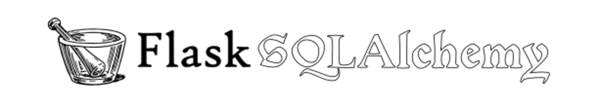

扩展介绍
1. 认识Flask-SQLAlchemy

Flask-SQLAlchemy 是一个为 Flask 应用增加
SQLAlchemy支持的扩展。它致力于简化在 Flask 中SQLAlchemy的使用。SQLAlchemy是目前python中最强大的 ORM框架, 功能全面, 使用简单。
ORM优缺点
- 优点
- 有语法提示, 省去自己拼写SQL，保证SQL语法的正确性
- orm提供方言功能(dialect, 可以转换为多种数据库的语法), 减少学习成本
- 面向对象, 可读性强, 开发效率高
- 防止sql注入攻击
- 搭配数据迁移, 更新数据库方便
- 缺点
- 需要语法转换, 效率比原生sql低
- 复杂的查询往往语法比较复杂 (可以使用原生sql替换)
2. 环境安装
pip install flask-sqlalchemy
flask-sqlalchemy在安装/使用过程中, 如果出现ModuleNotFoundError: No module named 'MySQLdb'错误, 则表示缺少mysql依赖包, 可依次尝试下列两个方案后重试:方案1: 安装
mysqlclient依赖包 (如果失败再尝试方案2)
pip install mysqlclient
- 方案2: 安装
pymysql依赖包
pip install pymysql
mysqlclient和pymysql都是用于mysql访问的依赖包, 前者由C语言实现的, 而后者由python实现, 前者的执行效率比后者更高, 但前者在windows系统中兼容性较差, 工作中建议优先前者。